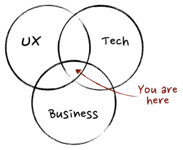
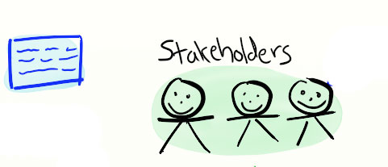
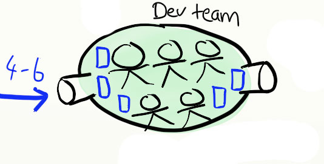
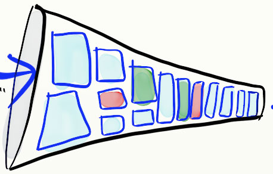
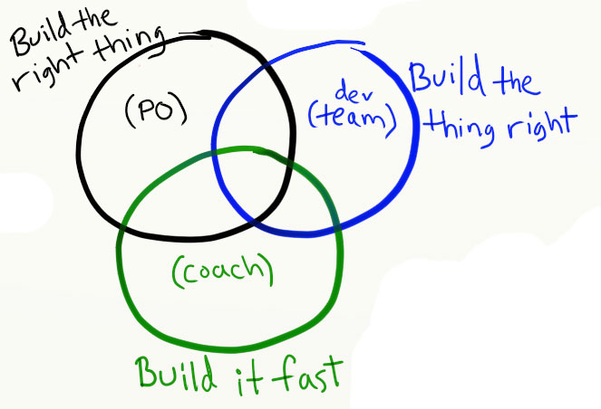

Desenvolvendo Produtos
de Forma Ágil
Com Scrum
Criado por Rômulo Gomes, Product Owner na KANUI / @romulo_devel
Apresentando-me Rapidamente
Paulistano de 23 anos, comecei a trabalhar com web em 2004. Já tive agência, trabalhei como dev php e front-end, mas me encontrei mesmo na área de Produto. Gosto de trabalhar com metodologias ágeis como o Scrum e o Lean.
Introduzindo o Assunto
Como assim Produto? Você não trabalha com sites?

Outras Dúvidas que podem surgir
- O que é esse tal de Desenvolvimento Ágil? Eu não sou programador, isso serve para mim?
- Porque ser ágil hoje em dia é tão importante?
Lean e Scrum:
Frameworks ou Metodologias?
O que é e como funciona esse tal de Scrum?
Na perspectiva do Dono do Produto
Marcelinho, nosso visionário
Esse é o Marcelinho, o Dono do Produto (Product Owner). Ele tem a visão de algo que vai revolucionar o mercado, mas ainda não sabe exatamente como vai construi-lo, muito menos quais serão os detalhes. O mais importante é que ele sabe qual é seu objetivo e qual problema deve ser solucionado a partir de sua idéia.
Stakeholders - As Partes Interessadas
- Todas as pessoas que utilizam ou são impactadas pelo sistema que estamos construindo.
- Quanto mais você entrega, mais eles irão te pedir coisas novas: user stories

O Time de Desenvolvimento e o Scrum Master
- Um pequeno time multidisciplinar de programadores, designers, arquitetos (etc), que irão nos ajudar a construir nossas user stories.
- Para ser ágil, o time investe pesado em testes automatizados e exije do PO tarefas muito bem detalhadas com critérios de aceitação e casos de teste.
- Esse time tem um membro em especial: o Scrum Master.

O Sprint
- Como eles são um time ágil, terão de fazer pequenas entregas frequentemente, e não um grande lançamento a cada X meses.
- No Scrum utilizamos sprints de 2, 3 ou 4 semanas.
- Esse time tem uma capacidade: 20 story points por sprint.
Product Backlog
O que é o Product Backlog? O que acontece quando tentamos satisfazer todos os desejos dos nossos Stakeholders?
- Backlog vira listinha do Papai Noel.
- Vários problemas em TI: times desmotivados; acúmulo de entregas; má qualidade de código; queda de produção, etc.
- Excessos para todos os lados: sistema se torna muito complexo, pesado, poluído e não entrega funcionalidades-chave.
Como impedir que isso aconteça?

Mantendo o backlog organizado
- ROI como ferramenta de priorização
- User Stories vagas no final da lista, user Stories concretas no topo
- Backlog Grooming
- Evitar a armadilha do "first in, first out"

Paixão e Comunicação
Nosso foco está errado
Devemos entregar mais valor para nossos consumidores e não mais funcionalidades!
Rapidez vs Acertividade vs Robustez

Não há prazo!
Gerenciamento realista de expectativas
Calma, podemos fazer uma previsão :)
- Previsão de Escopo Fixo
- Previsão de Prazo Fixo
- Previsão de Escopo e Prazo Fixo
Se a empresa onde você trabalha não gosta de se comunicar com honestidade então ela não está pronta para trabalhar com desenvolvimento ágil
Tudo isso é muito legal, mas como convenço o chefe?
- Faremos entregas rápidas e contínuas, a cada 5 a 10 dias;
- É extremamente fácil medir a produção do time;
- A equipe se torna mais unida e motivada pois sabe o que está fazendo, para quem está fazendo e porque está fazendo;
- O Scrum dá foco total nas tarefas de maior valor para o negócio e seus consumidores;
- Adeus Gerente de Projeto! A equipe se auto-organiza para realizar as tarefas;
- Agilidade: mude de foco sem parar seu time; tenha um ciclo de feedback curtíssimo;
- Quem usa Scrum: Globo.com. Microsoft, Google, Facebook, Nokia, SalesForce, Warner, Yahoo, etc;
- E o melhor de tudo...
ACABOU :(
- Prodcut Ownership & Agile - meu blog
- Slide Share
Contato
contato@romulodeveloper.com.br
(11) 9-8058-4648